H 모양 그대로, 아이콘만 G처럼 카카오톡 노랑 · 전화 파랑으로 바꿨어요. 체크를 끈 줄은 아이콘이 흐려지고 칸이 비어요. 위 제목은 자물쇠 + "답장을 보내면 공개할 연락처" 대신 내 연락처 *(빨간 별, 꼭 하나는 골라야 한다는 뜻). 연결된 뒤 B와 아이콘이 같아요.
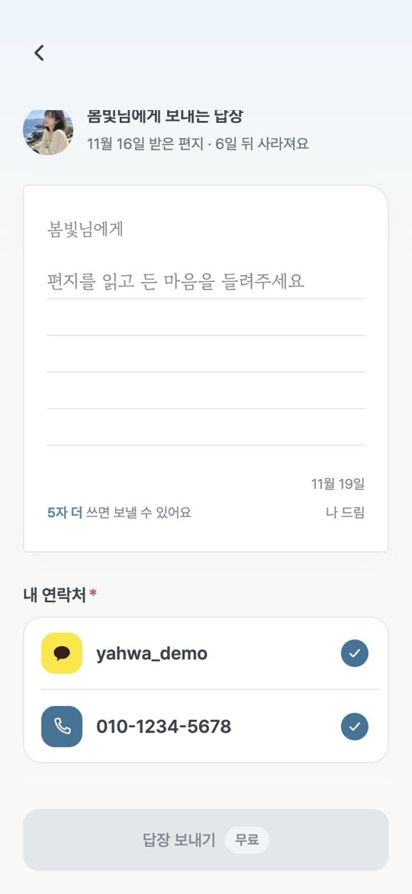
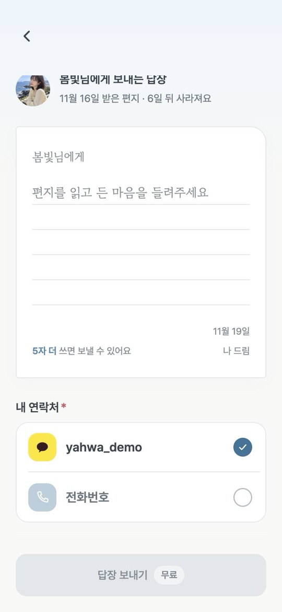
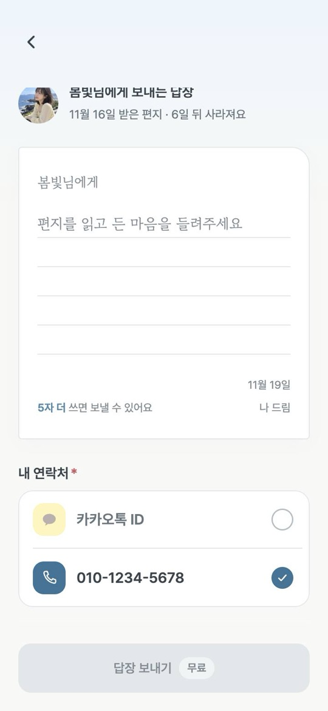
줄마다 칸이라 바로 눌러서 쓸 수 있어요. 쓰는 줄에만 검정 밑줄(cool-neutral-900)이 글자 바로 아래 붙고 커서가 생겨요. 꺼진 줄을 누르면 체크가 저절로 켜지고 빈 칸에 "010-0000-0000"이 보여요. 번호가 맞지 않은 채 보내면 그 줄이 빨개지고 토스트로 알려줘요(넣을 때 문구는 "전화번호를 확인해주세요"로 줄일게요).
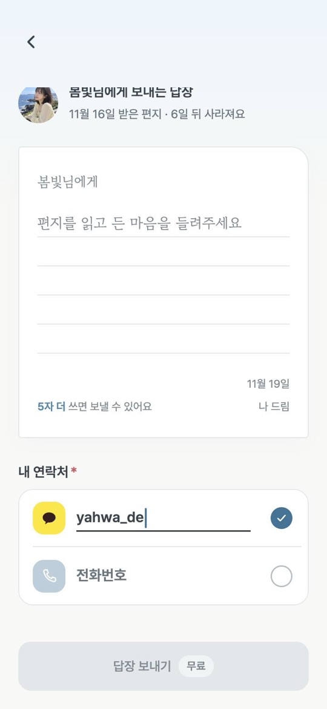
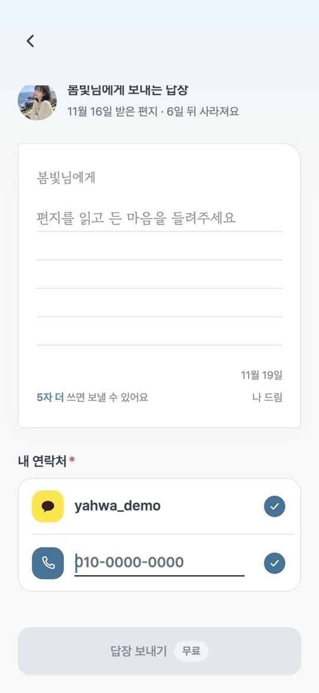
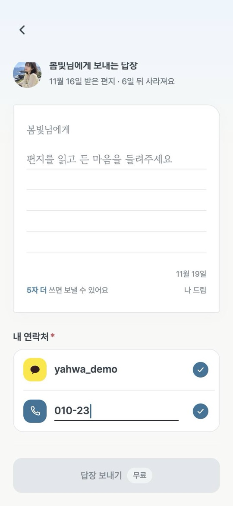
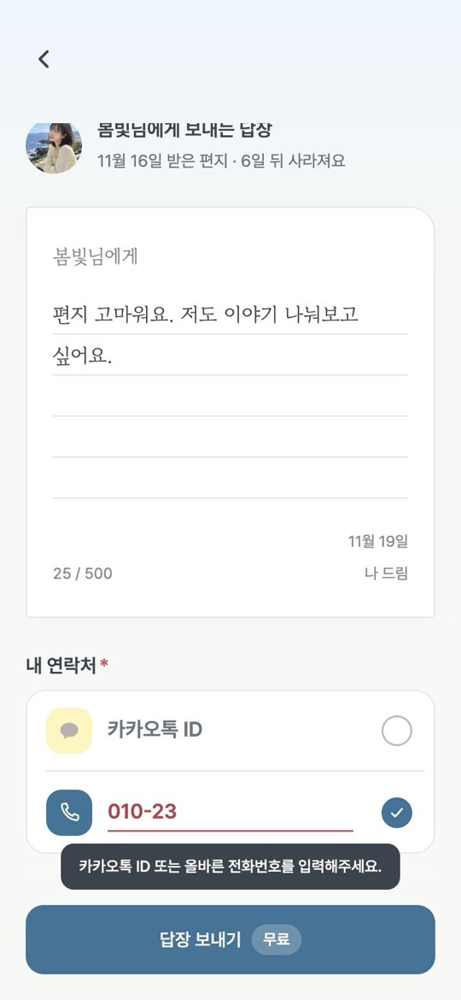
카카오톡 ID 칸 + 전화번호 "선택" 칸. 고를 수 있다는 게 안 보여요.
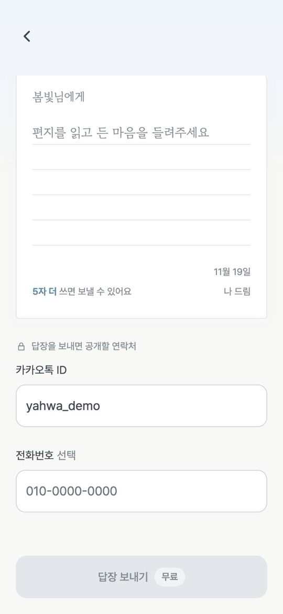
칩을 켜면 아래에 아이콘 붙은 칸이 열려요. 공간을 적게 써요.
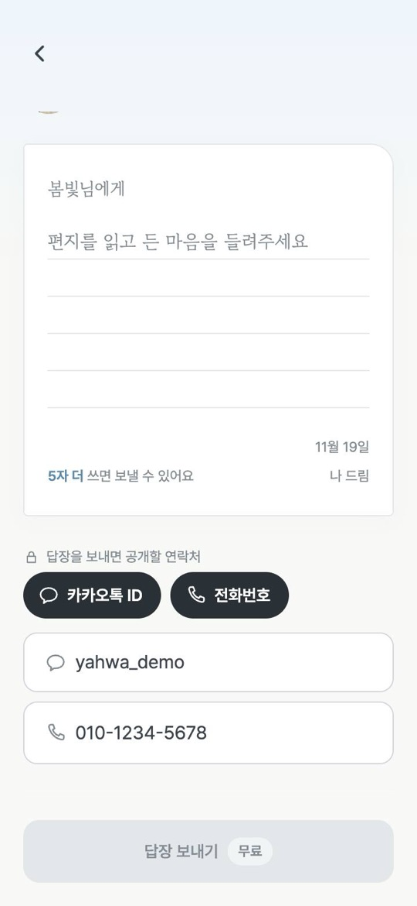
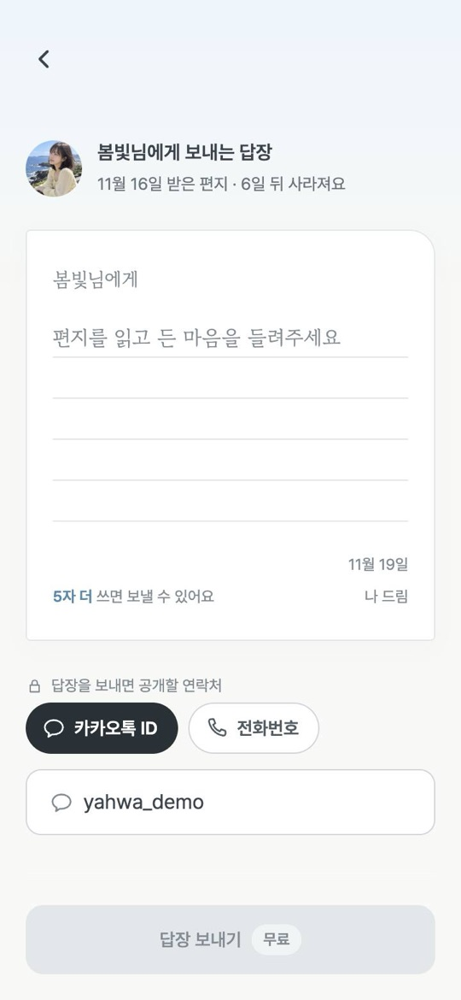
카드마다 아이콘 · 이름 · 체크. 고르면 카드 안에 칸이 열리고, 안 고른 카드는 접혀요.
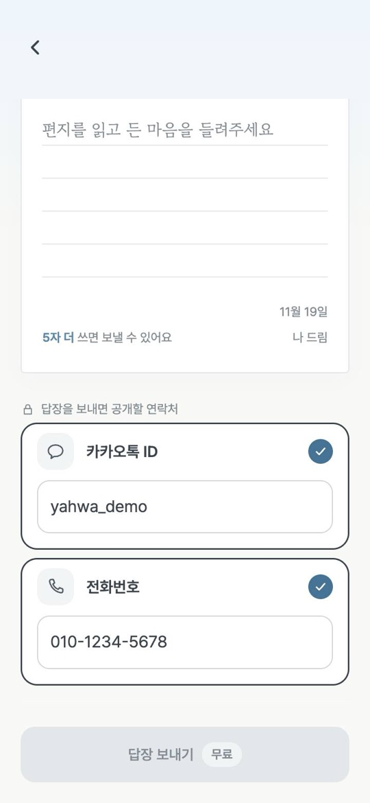
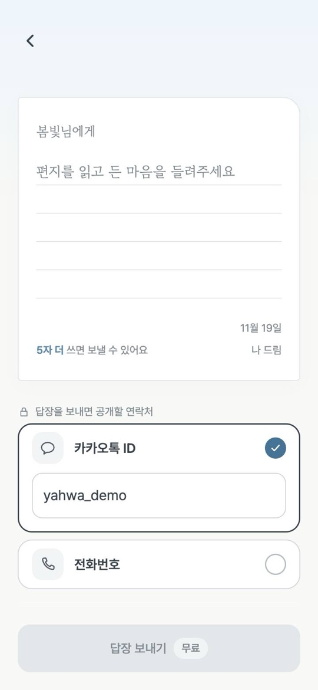
카카오톡 ID · 전화번호 · 둘 다 중 하나를 눌러요. 고르는 경우가 세 가지라는 게 바로 보여요.
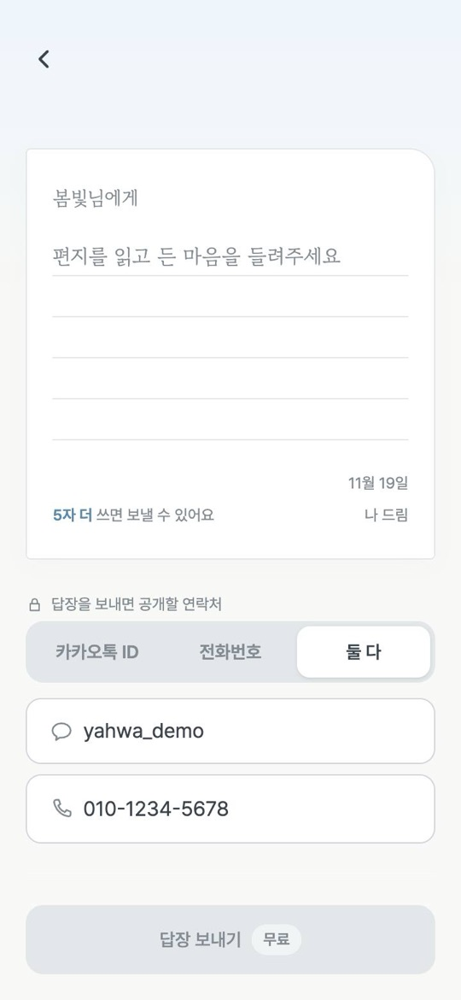
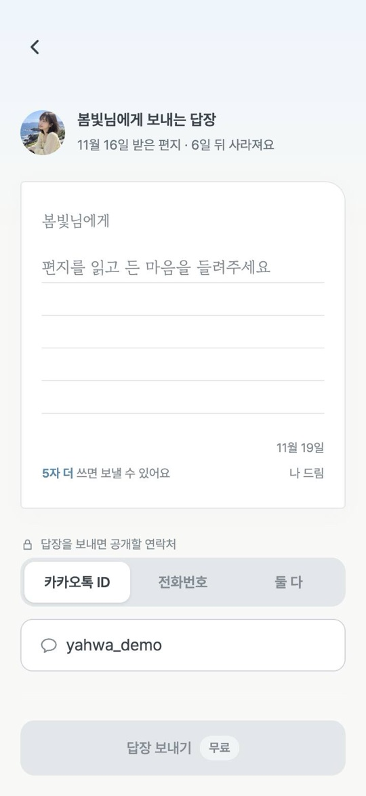
저장한 연락처를 보여주고 스위치로 공개만 켜고 꺼요. 색 아이콘이 연결된 뒤 B와 같아요. 값을 바꾸려면 줄을 눌러요.
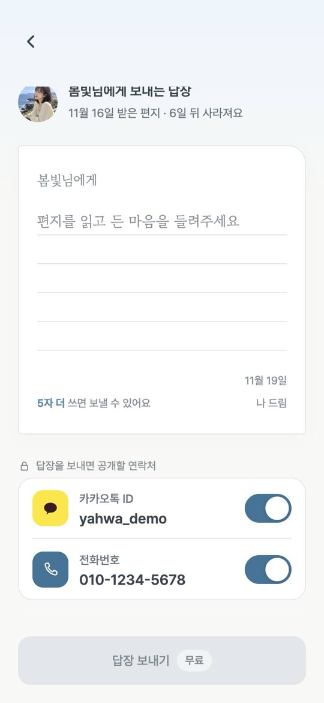
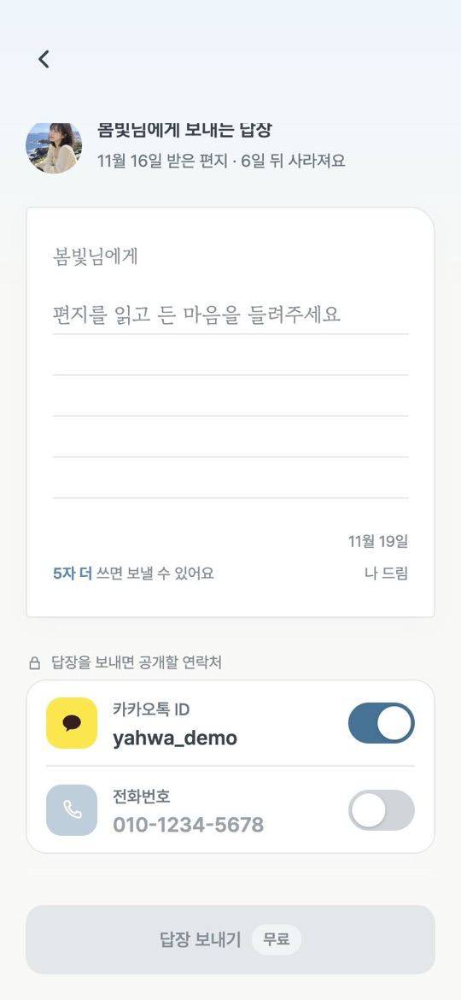
카드 하나에 두 줄. 아이콘 · 바로 쓰는 칸 · 오른쪽 체크. 가장 짧아요.
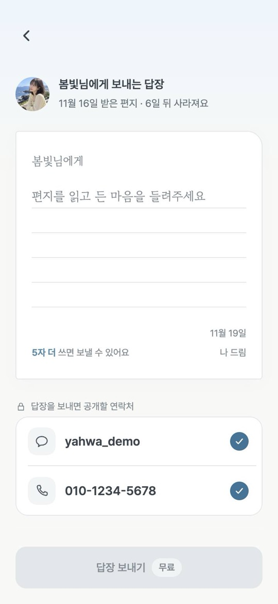
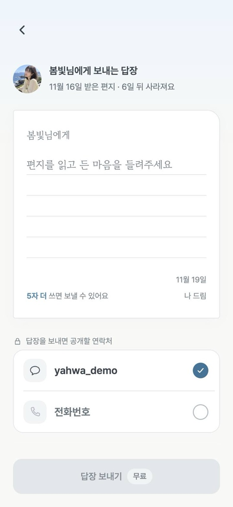
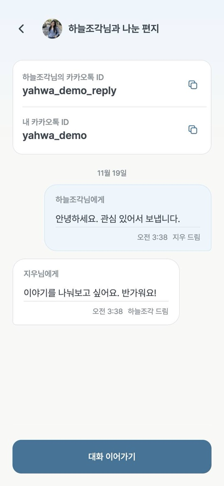
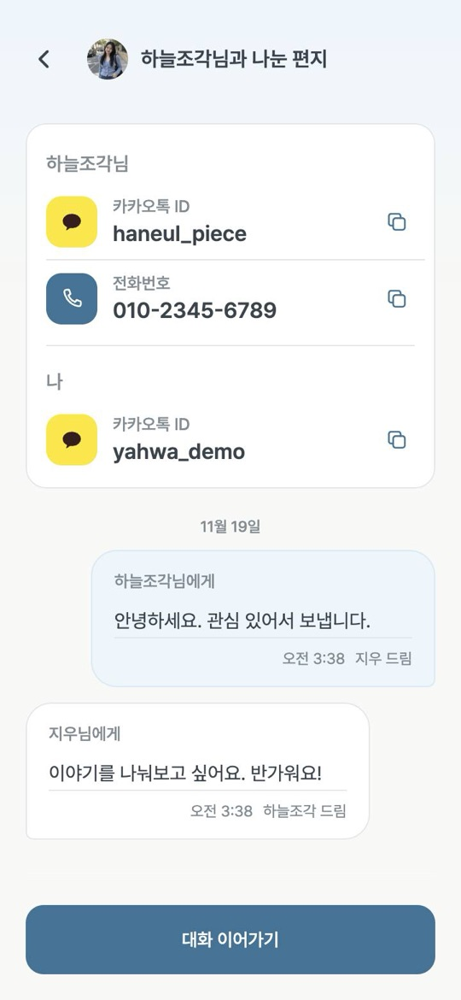